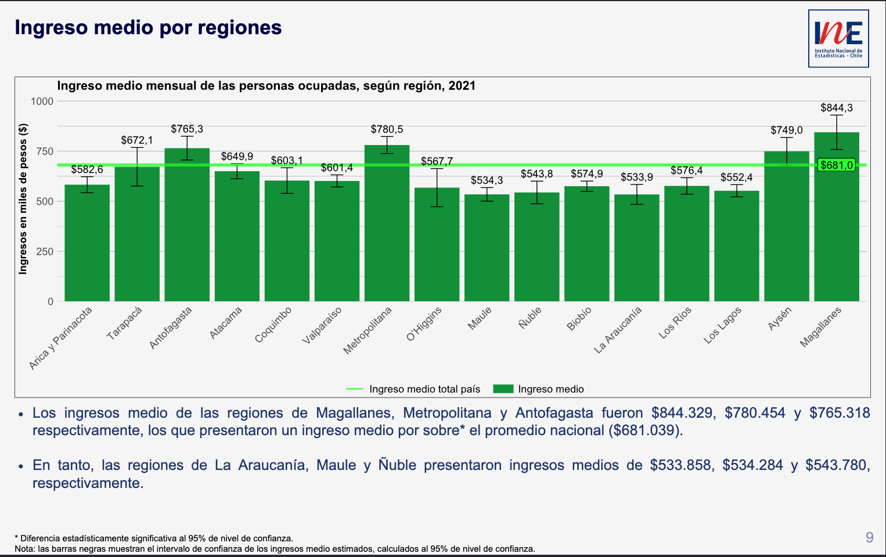
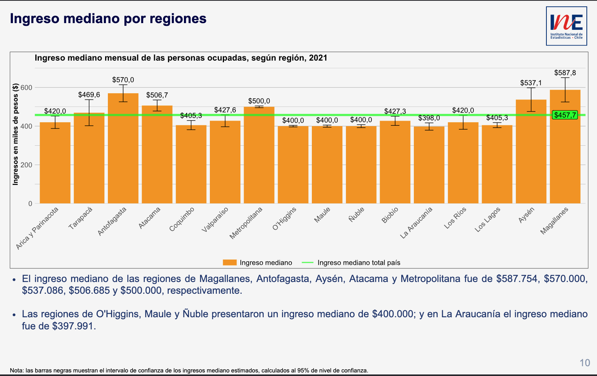

Una vez que hemos descargado los datos podemos acceder a ellos:
Code
import numpy as npimport pandas as pd# download the datadata_raw = pd.read_csv("esi-2021---personas.csv", encoding="ISO-8859-1", low_memory=False, index_col=0)data_raw.head(3)
idrph
nro_linea
edad
tramo_edad
sexo
parentesco
curso
nivel
termino_nivel
estudia_actual
...
mes_central
ano_encuesta
mes_encuesta
region
r_p_c
estrato
tipo
conglomerado
id_identificacion
hogar
1
14565
4
36
5.0
1
4
2
4
2
2
...
11
2021
10
8
8205
8200111
1
820510025
102542.0
1
2
24946
2
57
9.0
2
3
2
10
1
2
...
11
2021
12
13
13123
13291
1
13123000144956
69274.0
1
3
41897
2
64
10.0
2
2
3
8
1
2
...
11
2021
10
16
16302
16300120
3
1630220015
80521.0
1
3 rows × 292 columns
Para el análisis, la encuesta considera sólo las personas ocupadas con más de 1 mes en el empleo actual. Podemos acceder al Manual y Guía de Variables ESI y ver que la variable que nos interesa es ocup_ref donde el valor 1 corresponde a los “Ocupados con más de 1 mes en el empleo actual”.
Code
data = data_raw[data_raw["ocup_ref"] ==1].copy()
Del Manual y Guía de Variables ESI, vemos que debemos considerar el factor de expansión que corresponde a la variable fact_cal_esi. De esta forma encontramos que el número de personas ocupadas es 8.243.580.
Code
n_ocupados = data['fact_cal_esi'].sum()print(f"Número de personas ocupadas: {n_ocupados:,.0f}".replace(',','.'))
Número de personas ocupadas: 8.243.580
Para calcular el sueldo promedio, según el Manual y Guía de Variables ESI, debemos utilizar la variable ing_t_p que corresponde a “Ingresos del trabajo principal” y debemos utilizar nuevamente el factor de expansión.
Para calcular el sueldo promedio, diferenciando por hombre/mujer, debemos utilizar la variable sexo.
Code
data['sexo'] = data['sexo'].map({1: 'hombre', 2: 'mujer'})ocupados_hombres = data[data['sexo'] =='hombre']ocupadas_mujeres = data[data['sexo'] =='mujer']print(f"Porcentaje de hombres: {100*ocupados_hombres['fact_cal_esi'].sum()/n_ocupados:.1f}%")print(f"Ingreso promedio mensual para hombres: ${ingreso_promedio(ocupados_hombres):,.0f}".replace(',','.'))print(f"Porcentaje de mujeres: {100*ocupadas_mujeres['fact_cal_esi'].sum()/n_ocupados:.1f}%")print(f"Ingreso promedio mensual para mujeres: ${ingreso_promedio(ocupadas_mujeres):,.0f}".replace(',','.'))
Porcentaje de hombres: 58.2%
Ingreso promedio mensual para hombres: $749.046
Porcentaje de mujeres: 41.8%
Ingreso promedio mensual para mujeres: $586.178
Nuevamente los valores coinciden con los valores entregados por el INE (ver slide arriba).
Para calcular el sueldo promedio, diferenciando por región, debemos utilizar la variable region:
Code
map_regiones = {1: "Tarapacá",2: "Antofagasta",3: "Atacama",4: "Coquimbo",5: "Valparaíso",6: "O'Higgins",7: "Maule",8: "Biobío",9: "La Araucanía",10: "Los Lagos",11: "Aysén",12: "Magallanes",13: "Metropolitana",14: "Los Ríos",15: "Arica y Parinacota",16: "Ñuble",99: "Región no identificada"}data["region"] = data["region"].map(map_regiones)ocupados_regiones = data.groupby('region').apply(lambda x: ingreso_promedio(x))for index, value in ocupados_regiones.items():print(f"Ingreso promedio en la Región de {index}: ${value:,}".replace(',','.'))
Ingreso promedio en la Región de Antofagasta: $765.318
Ingreso promedio en la Región de Arica y Parinacota: $582.646
Ingreso promedio en la Región de Atacama: $649.946
Ingreso promedio en la Región de Aysén: $748.998
Ingreso promedio en la Región de Biobío: $574.946
Ingreso promedio en la Región de Coquimbo: $603.089
Ingreso promedio en la Región de La Araucanía: $533.858
Ingreso promedio en la Región de Los Lagos: $552.445
Ingreso promedio en la Región de Los Ríos: $576.430
Ingreso promedio en la Región de Magallanes: $844.329
Ingreso promedio en la Región de Maule: $534.284
Ingreso promedio en la Región de Metropolitana: $780.454
Ingreso promedio en la Región de O'Higgins: $567.721
Ingreso promedio en la Región de Tarapacá: $672.109
Ingreso promedio en la Región de Valparaíso: $601.402
Ingreso promedio en la Región de Ñuble: $543.780
Los valores coinciden con los entregados por el INE (ver slide abajo).

Sitio INE ingreso promedio por regiones
Para calcular el ingreso mediano (la mitad de las personas ocupadas recibe ingresos menores o iguales al ingreso mediano) para la población total, hombres y mujeres, y por regiones:
print(f"Ingreso mediano para hombres: ${ingreso_mediano(ocupados_hombres):,.0f}".replace(',','.'))print(f"Ingreso mediano para mujeres: ${ingreso_mediano(ocupadas_mujeres):,.0f}".replace(',','.'))
Ingreso mediano para hombres: $500.000
Ingreso mediano para mujeres: $405.348
Code
ocupados_regiones = data.groupby('region').apply(lambda x: ingreso_mediano(x))for index, value in ocupados_regiones.items():print(f"Ingreso mediano en la Región de {index}: ${value:,}".replace(',','.'))
Ingreso mediano en la Región de Antofagasta: $570.000
Ingreso mediano en la Región de Arica y Parinacota: $420.000
Ingreso mediano en la Región de Atacama: $506.685
Ingreso mediano en la Región de Aysén: $537.086
Ingreso mediano en la Región de Biobío: $427.307
Ingreso mediano en la Región de Coquimbo: $405.348
Ingreso mediano en la Región de La Araucanía: $397.991
Ingreso mediano en la Región de Los Lagos: $405.348
Ingreso mediano en la Región de Los Ríos: $420.000
Ingreso mediano en la Región de Magallanes: $587.754
Ingreso mediano en la Región de Maule: $400.000
Ingreso mediano en la Región de Metropolitana: $500.000
Ingreso mediano en la Región de O'Higgins: $400.000
Ingreso mediano en la Región de Tarapacá: $469.630
Ingreso mediano en la Región de Valparaíso: $427.642
Ingreso mediano en la Región de Ñuble: $400.000
Dichos valores coinciden con los valores entregados por el INE (ver slides abajo).
Sitio INE ingreso mediano

Sitio INE ingreso mediano regiones
Dudas o sugerencias pueden hacerlas enviándome un mensaje en Twitter: alonsosilva